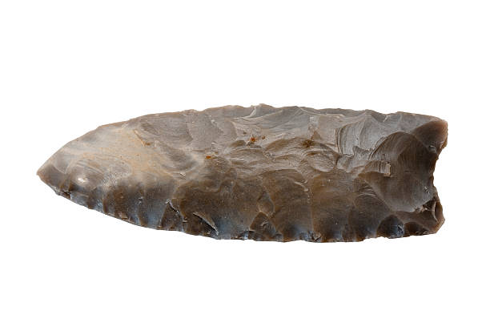
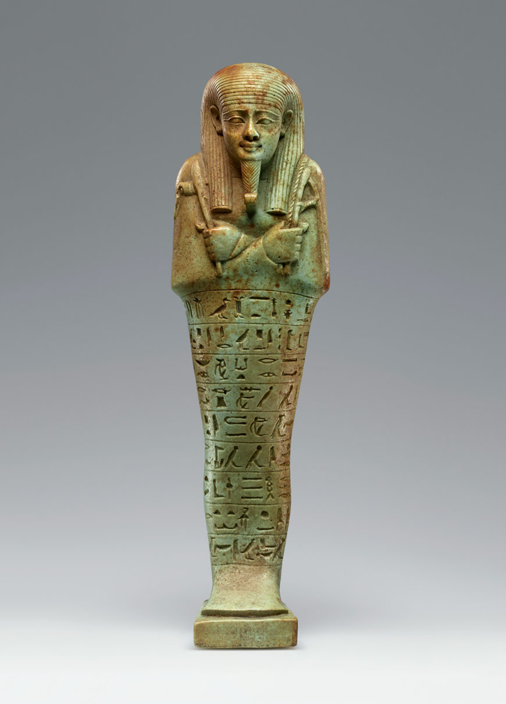
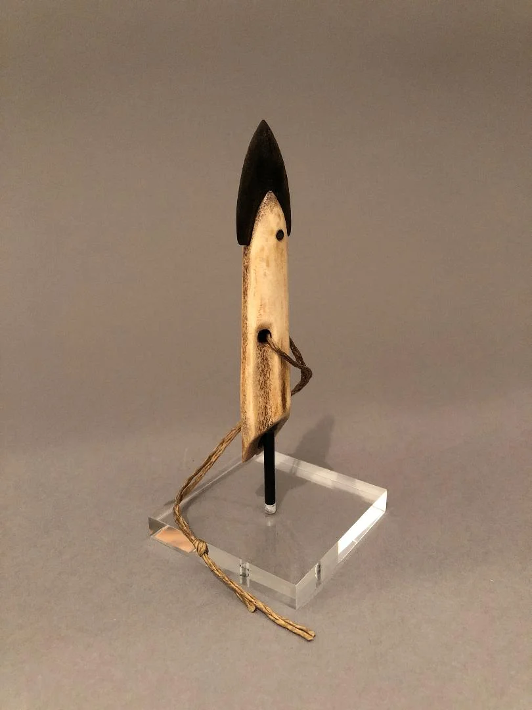
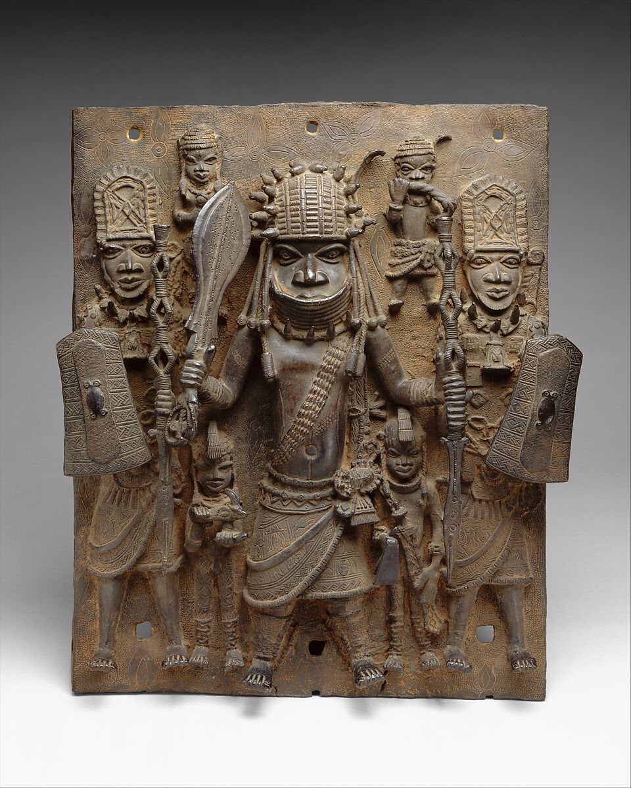
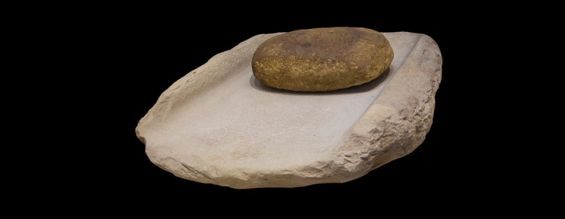

Image: Brian Brockman via iStock
Clovis Projectile Point
Metadata generated with AI assistance
Click any artifact image to open its Interpretation modal.
Explore artifacts and stories from cultures around the world. Our collections span thousands of years and multiple continents, preserving the material heritage of humanity's diverse cultural expressions.

Image: Brian Brockman via iStock
Metadata generated with AI assistance

Image: Unidentified artist, Japanese, Middle Jōmon period, Jar, c. 2500 BCE, earthenware, 12 5/8 × 8 1/2 in. (32.1 × 21.6 cm). The William A. Whitaker Foundation Art Fund, 2024.42.1. via Ackland
Metadata generated with AI assistance

Image:Ushabti for Neferibresaneith, about 570–526 B.C., Egyptian. Green faience, 7 3/16 × 2 1/16 in. The J. Paul Getty Museum, 2016.2. Digital image courtesy of Getty's Open Content Program via SmartHistory
Metadata generated with AI assistance

Image: Ray Louis Creations
Metadata generated with AI assistance

Image: Ìgùn Ẹ́rọ̀nwwọ̀n (brass-casting guild) artists via Metmuseum
Metadata generated with AI assistance

Image: Mano and Metate via Nps.gov
Metadata generated with AI assistance
ID: MU-431
Title: Clovis Projectile Point
Culture: Paleoindian / Clovis
Age: ~13,200–12,800 BP (Late Pleistocene)
Material: Cryptocrystalline flint (chert)
Origin: Blackwater Draw Locality No. 1, New Mexico, USA
The Clovis Projectile Point represents a pinnacle of Late Pleistocene survival technology, crafted from cryptocrystalline flint sourced for its sharpness and durability. Its thin, lightweight lanceolate form with a central flute demonstrates advanced pressure-flaking techniques, intentionally designed for hafting and shock absorption—critical adaptations for hunting megafauna like mammoth and bison. The discovery at Blackwater Draw Locality No. 1, amidst buried paleosols and associated faunal remains, situates this artifact within a dynamic hunting landscape where Paleoindian groups navigated and interpreted sacred spaces while exploiting ecological resources. Evidence of use—including distal impact fractures, micro-chipping, and hafting polish—reflects not only functional utility but also the intimate relationship between tool, hunter, and environment. While utilitarian and undecorated, the point embodies a cultural knowledge system transmitted across generations, balancing material efficiency with spatial and temporal awareness of prey migration, terrain, and group cooperation. Interpretive tension arises from the fragmentary archaeological record: while the tool offers concrete insights into hunting practices, the intangible aspects of ritual, symbolism, or social meaning remain elusive. Oral histories, Indigenous knowledge, and community-engaged interpretation emphasize respect for these landscapes, framing Clovis technology as both pragmatic and culturally embedded within sacred terrains of ancestral memory.
This Clovis point conforms to the classic morphology widely observed across North America during the Paleoindian period. Similar lanceolate forms with central fluting and pressure-flaked surfaces have been documented from sites spanning the continental United States, indicating a shared technological tradition and knowledge transmission among dispersed groups. Comparative studies highlight consistency in dimensions, edge profiles, and hafting features, situating this point within a pan-regional toolkit designed for efficiency in large-game hunting, demonstrating both technological convergence and cultural continuity.
While this artifact provides valuable insight into Late Pleistocene hunting technology, interpretations must acknowledge limitations. Archaeological evidence alone cannot fully capture the social, symbolic, or ritual significance Clovis groups may have attributed to these tools. The context of discovery, although informative, offers only a partial view of landscape use and cultural practices. Patterns of wear, fluting, and fracture suggest function, yet their meanings may extend beyond subsistence. Visitors are encouraged to see this point as a tangible window into adaptive ingenuity and shared traditions, while remaining mindful of uncertainties inherent in reconstructing behaviors and cultural significance from material remains.
On display courtesy of: Museum of Cultural Memory Archaeology Collection
Middle Jōmon period, ~4,500–3,500 BCE
Low-fired clay tempered with crushed shell and plant fibers
12 5/8 × 8 1/2 in. (32.1 × 21.6 cm)
Sannai-Maruyama Settlement, Aomori Prefecture, Japanm
Excavated from a refuse pit adjacent to a pit dwelling
MU-124124
This cord-marked pottery vessel, excavated from a refuse pit adjacent to a pit dwelling at the Sannai-Maruyama Settlement in Aomori Prefecture, Japan, provides a window into the daily life and community practices of Middle Jōmon societies (~4,500–3,500 BCE). Crafted from low-fired clay tempered with crushed shell and plant fibers, the vessel measures approximately 32.1 × 21.6 cm, with a rounded body, slightly constricted neck, and flared rim. The uneven thickness and medium weight reflect the handmade, utilitarian nature of the vessel, optimized for boiling, stewing, and storing plant foods and shellfish consumed by the inhabitants of this semi-sedentary village. The cord-marked surface, created by impressing fibers or cords into the clay before firing, may signify more than aesthetic preference; it could convey group identity or cultural tradition, connecting individual households to a shared communal or regional style. Such patterns invite reflection on the ways craft and daily labor encode social knowledge, even in functional objects. The vessel’s placement in a refuse pit suggests that it had fulfilled its role in domestic routines, embodying both the practicality of daily life and the continuity of cultural practices. Comparisons to Neolithic Chulmun pottery from Korea reveal broader regional networks of stylistic and functional exchange, indicating that Jōmon artisans were aware of, or perhaps influenced by, broader East Asian traditions while simultaneously asserting local identity through their distinctive cord patterns. Interpretive tension arises in discerning whether the decorative motifs primarily conveyed social signals, ritual significance, or merely practical handhold textures; we can never fully recover the intent of past makers, but careful study of material, context, and ethnographic analogy provides meaningful insight. This vessel also invites visitors to consider labor, resource knowledge, and seasonal rhythms: the choice of low-fired clay, inclusion of shell and plant temper, and vessel shape reflect intimate knowledge of local materials, cooking practices, and food preservation needs. While we cannot identify the individual potter, the vessel connects us to their hands, daily routines, and the communal rhythms of Jōmon life. Visitors are encouraged to reflect on the interplay between utility and culture embodied in this artifact: it is both a tool for nourishment and a vessel of social memory, linking people, environment, and craft in ways that endure beyond its functional life. The Jōmon cord-marked pottery vessel reminds us that ordinary objects can carry extraordinary cultural meaning, bridging past and present through shared human creativity and community knowledge.
When compared to Neolithic Korean Chulmun pottery, the Jōmon cord-marked vessel exhibits both stylistic and functional parallels as well as distinctive regional differences. Both traditions employed impressed surface patterns—cord marks in Japan and comb impressions in Korea—which likely served multiple purposes, including decoration, grip enhancement, and potentially social signaling. Functionally, both vessel types were used for domestic food preparation and storage, reflecting semi-sedentary or village-based lifeways reliant on cultivated or gathered resources. Stylistically, the Jōmon vessel’s rounded body and slightly constricted neck contrasts with many Chulmun forms, which often feature more elongated profiles and pronounced necks. The cord-marking of Jōmon pottery is generally more irregular and textured, suggesting a greater emphasis on tactile variation or individual expression, whereas Chulmun comb patterns tend to exhibit more regular, repetitive motifs, possibly indicating standardized symbolic conventions or community-wide stylistic norms. These differences highlight the interplay between shared technological strategies and local cultural adaptation. Both traditions demonstrate the skilled manipulation of low-fired clay with natural tempering materials, yet each reflects its community’s aesthetic choices, environmental resources, and social context. Such comparisons emphasize the value of cross-cultural study: they reveal convergent solutions to common functional needs while illuminating unique expressions of identity and tradition within East Asia’s prehistoric pottery landscapes.
While this vessel offers valuable insight into the daily lives and material culture of Middle Jōmon communities, it is important to recognize the limitations of interpretation. Archaeological evidence cannot fully reveal the intentions, beliefs, or symbolic meanings that the original makers may have assigned to their objects. Patterns that appear decorative may have served practical, social, or ritual purposes that remain speculative. The vessel’s discovery in a refuse pit provides context for domestic use, yet it may not reflect the full spectrum of how similar pottery was employed across the settlement or region. Interpretations must also account for gaps in the archaeological record, taphonomic processes, and modern biases. Visitors are encouraged to approach this artifact as a partial window into the past, one that invites curiosity and reflection rather than definitive conclusions about the lives and choices of Jōmon peoples.
On display courtesy of: Museum of Cultural Memory Archaeology Collection
ID: MU-421
Title: Egyptian Faience Ushabti Figurine
Culture: New Kingdom, 19th Dynasty (Egypt)
Age: ~1290–1224 BCE
Material: Silica-based faience with copper-derived turquoise glaze
Origin: Tomb chamber, West Bank of Thebes (Luxor), Egypt
This ushabti figurine reflects a central aspect of New Kingdom funerary culture, serving as a magical substitute to carry out agricultural labor in the afterlife. Positioned near the foot of the sarcophagus in an elite tomb chamber, the figurine is part of a broader assemblage including shabti boxes, amulets, funerary mask fragments, and linen wrappings, all indicating its ritual function rather than practical use. Its mold-cast body, hand-finished inscription, and kiln-fired glazing exemplify the advanced technical skills of artisans in this period. The turquoise glaze derived from copper compounds emphasizes symbolic vitality and protection. Minor glaze loss and small cracks reflect centuries of burial but do not obscure the figurine’s overall form or inscription. While it is tempting to see each ushabti as a purely functional tool for labor, community-centered interpretations highlight the spiritual and cultural values invested by the tomb’s creators, connecting daily life with enduring beliefs about the afterlife. Visitors are encouraged to consider both the technical craftsmanship and the intangible, symbolic meanings that these figures conveyed within the sacred landscape of ancient Thebes.
This artifact aligns with the standard New Kingdom ushabti form, featuring the mummiform human shape and hand-inscribed text from Book of the Dead Spell 6. Similar figures are found in other elite tombs of the 19th Dynasty, emphasizing the uniformity of funerary practices across Thebes while allowing for individual stylistic variations in glaze color, inscription quality, and mold details. It shares common dimensions, base shape, and symbolic function with contemporary examples, confirming its place within established ritual and artistic traditions.
While the figurine’s form and placement provide strong evidence for its ritual function, interpretation of its meaning should remain open to nuance. The symbolic labor it represents, and the spiritual beliefs it embodies, are inferred from funerary context, historical texts, and ethnographic analogy; we cannot know the exact intentions of the original tomb occupants. Additionally, the sacred nature of burial artifacts requires respectful engagement; speculative readings of personal or magical significance should be approached with care, honoring the cultural and spiritual context in which the object was created.
On display courtesy of: Museum of Cultural Memory Archaeology Collection
ID: MU-451
Title: Inuit Bone Harpoon Head (Toggling Type)
Culture: Inuit, Late pre-contact to early historic period
Age: ~1700–1850 CE
Material: Caribou bone with sinew groove; possible ivory tip insert
Origin: Coastal hunting camp, Baffin Island, Nunavut, Canada
This harpoon head represents an essential tool for Inuit communities living along the coasts of Baffin Island during the late pre-contact to early historic period. Found near a seal processing area within a temporary seasonal hunting camp, it reflects subsistence strategies deeply connected to the rhythms of Arctic life. Its narrow, barbed, slightly curved form, carved from dense caribou bone with a precisely cut toggling hole for a sinew line—and possibly an ivory tip insert—demonstrates advanced craftsmanship honed through generations. Edge rounding, impact stress marks, and traces of organic residue indicate repeated use in hunting marine mammals, likely seals or walrus. Field-based excavation and GIS mapping place it in direct association with kayak rib fragments, stone lamps (qulliq), and hide scraping tools, offering a holistic understanding of hunting and domestic practices. Community-centered oral histories emphasize the spiritual and communal significance of these implements, highlighting the intimate relationship between hunters, landscape, and the animals that sustained them. While utilitarian in function, the tool carries cultural and symbolic weight, embodying knowledge, skill, and survival strategies passed through generations. Visitors are invited to reflect on the continuity of tradition and the deep ties between Arctic peoples and their sacred coastal landscapes.
The harpoon head is consistent with traditional Inuit toggling harpoon technology, sharing the narrow, barbed, and slightly curved design seen across Arctic communities. Similar artifacts from ethnographic and archaeological contexts indicate standardization in toggle mechanisms for secure attachment to lines, facilitating reliable marine mammal capture. Its size, material, and manufacture techniques closely align with known examples used in seasonal hunting practices, confirming its place within a long-standing technological tradition.
While the artifact’s form, wear patterns, and associated context provide strong evidence for its function in marine mammal hunting, interpretations remain provisional. The symbolic and spiritual meanings attributed to hunting tools in Inuit culture may not be fully visible through material evidence alone. Visitors are encouraged to approach the artifact with respect, recognizing that it represents both subsistence strategies and community knowledge deeply tied to sacred landscapes, and that some aspects of its cultural significance may remain intangible or mediated through oral traditions.
On display courtesy of: Museum of Cultural Memory Anthropology Collection
ID: MU-441
Title: Benin Bronze Plaque (Oba’s Court Relief)
Culture: Kingdom of Benin, pre-colonial period
Age: 16th–17th century CE
Material: Cast brass/bronze using lost-wax technique
Origin: Royal Palace complex, Benin City, present-day Nigeria
This Benin Bronze Plaque offers a window into the ceremonial and political life of the pre-colonial Kingdom of Benin. Originally mounted on palace pillars, as indicated by mounting holes and wear on the reverse, it visually reinforced the authority of the Oba and the hierarchical order of court officials. The figures carved in high relief, with intricate regalia and symbolic motifs, reflect both artistry and cultural codification, conveying messages about rank, loyalty, and royal divinity. Chipping around the border and surface patina attest to centuries of exposure and handling, while the precise lost-wax casting technique illustrates sophisticated metallurgical knowledge. Although primarily decorative and commemorative, these plaques also served as mnemonic devices for collective memory and palace protocol. Collaborative anthropological study, including oral histories and comparative analysis, highlights how contemporary Edo communities recognize these plaques as cultural treasures, connecting present-day practitioners to ancestral lineage, authority structures, and ritual performance. While the plaque’s materiality communicates power visually, its meaning is also relational—rooted in social networks, palace governance, and ceremonial contexts that extend beyond the object itself. Visitors are invited to reflect on the ways material culture embodies and mediates authority, memory, and cultural continuity.
This plaque matches known Benin Palace bronze relief plaques housed in major museum collections, sharing stylistic conventions, scale, and iconographic motifs. Comparative examples show similar high-relief carving of court officials, complex regalia, and lost-wax casting craftsmanship, situating this artifact within a standardized palace production tradition.
While material evidence and comparative study inform our understanding, interpretations of court life, symbolic meaning, and ritual significance remain partial reconstructions. This plaque is a product of both artistic skill and social context; its cultural resonance is best appreciated in relation to palace practices and oral histories. Viewers should recognize that while the artifact communicates power visually, many aspects of its social, ceremonial, and spiritual significance are not fully recoverable from the object alone.
On display courtesy of: Museum of Cultural Memory Anthropology Collection
ID: MU-424
Title: Ancestral Puebloan Grinding Mano
Culture: Ancestral Puebloan, Pueblo III period
Age: ~1000–1200 CE
Material: Fine-grained basalt river stone
Origin: Mesa Verde region, Colorado, USA
This grinding mano illustrates the daily life and subsistence practices of Ancestral Puebloan communities living in the Mesa Verde region during the Pueblo III period. Found on the floor of a domestic room near a metate slab, the tool’s dense, dark gray basalt surface has been heavily polished and flattened through repeated grinding of maize, seeds, and pigments, reflecting prolonged use and hands-on interaction with food preparation. Microscopic starch residues and surface wear corroborate its function, while its oval, heavy form with rounded edges highlights ergonomic adaptation over time. Manufactured by pecking rather than formal carving, the mano represents a tradition of practical knowledge transmitted through community practices. Associated finds—grayware pottery sherds, hearth ash, and corn cobs—situate it within a larger domestic and dietary context. While primarily utilitarian, community-centered research emphasizes the significance of such tools in structuring daily routines, connecting individuals to their landscape, and embedding knowledge of cultivation, storage, and nourishment. The artifact invites reflection on how mundane objects carry layered histories, linking material culture, labor, and identity across generations.
This mano aligns closely with common Ancestral Puebloan grinding tool assemblages. Its size, shape, and wear patterns are consistent with similar handstones found in other Pueblo III domestic contexts, confirming widespread adoption of these ergonomic, durable tools for food preparation. Comparative examples show similar basalt composition, flattening from prolonged use, and association with metates, hearths, and plant processing residues.
Interpretations of use and cultural significance are grounded in archaeological context and material analysis, yet some aspects of daily practice and community meaning remain intangible. While the physical evidence demonstrates grinding activity, insights into social organization, ritual associations, or symbolic significance are inferred and may not fully capture the perspectives of past communities. Visitors are encouraged to consider the mano as both a practical tool and a vessel of knowledge, connecting people, landscape, and sustenance in ways that may extend beyond the material record.
On display courtesy of: Museum of Cultural Memory Anthropology Collection
Cryptocrystalline flint (chert)
Hafted spear point for atlatl hunting of large game
Blackwater Draw, New Mexico, USA
Recovered from a buried paleosol at Blackwater Draw, this thin, lanceolate point of pressure-flaked chert carries the marks of lived experience. Its impact fracture, edge micro-chipping, and polish near the hafting base show helping hands once bound it to a spear used in the pursuit of large game among now-extinct bison and mammoth. Dated to ~13,200–12,800 BP, it belongs to the Clovis cultural phase, when small, mobile communities moved carefully across changing Late Pleistocene landscapes. Field mapping and spatial study place this object within an open-air kill and butchering ground, not a home, reminding us that survival shaped daily decisions. Yet uncertainty remains: was this single moment of loss during a hunt, or part of repeated seasonal return to a known place? Community oral histories from the region speak of respectful hunting grounds where animals, land, and people were bound in reciprocity. Visitors are asked to approach this artifact as part of a living landscape of memory, not merely a tool of stone.
Low-fired clay with shell and fiber temper
Cooking and storage vessel
Sannai-Maruyama Settlement, Japan
This vessel was shaped by hand more than 5,000 years ago in what is now northern Japan. Its rounded body, slightly narrowed neck, and flared rim suggest it was used for boiling and stewing plant foods and shellfish—foods abundant near the Sannai-Maruyama settlement. The clay is mixed with crushed shell and plant fibers, strengthening the pot during cooking. The cord-marked surface is more than decoration. In the Middle Jōmon period, such patterns may have expressed group identity or shared tradition. Excavated from a refuse pit beside a pit dwelling, this vessel reminds us that everyday cooking and communal meals shaped community life. What patterns connect your daily routines to your community?
Faience with turquoise glaze
Funerary servant figure for the afterlife
West Bank of Thebes, Egypt
This small, mummiform figure was placed near the foot of a sarcophagus in an elite tomb on the West Bank of Thebes. Made of silica-based faience and covered in a copper-derived turquoise glaze, it was kiln-fired to achieve its luminous blue-green surface—now worn in places along the limbs. In New Kingdom Egypt, figures like this were called ushabtis. Inscribed by hand with words from Book of the Dead Spell 6, they were intended to answer a summons in the afterlife, performing agricultural labor on behalf of the deceased. As one modern Egyptian heritage practitioner reflected in conversation, “These figures speak to a hope that no one labors alone—even after death.” Lightweight and brittle, this figurine was never meant for earthly work. Instead, it embodies care, preparation, and enduring relationships between the living and the dead.
Caribou bone with ivory tip
Marine mammal hunting tool
Baffin Island, Nunavut, Canada
This small, barbed harpoon head (8.6 cm) was used by Inuit hunters to catch seals and walruses at seasonal coastal camps. Hand-carved from caribou bone, with a precise hole for attaching a sinew line, it reflects a long-standing hunting technology adapted for survival in Arctic waters. Evidence of wear—edge rounding, impact marks, and traces of animal tissue—tells a story of repeated use. Found alongside kayak ribs, seal bones, and a stone lamp (qulliq), this harpoon is embedded in a broader landscape of daily and sacred practice. Inuit collaborators remind us that hunting tools are not just practical—they connect people to place, community, and the rhythms of the sea. Even a single harpoon head opens a window into knowledge, skill, and care passed across generations.
Cast brass/bronze, lost-wax technique
Palace decoration commemorating royal authority
Royal Palace, Benin City, Nigeria
Cast in brass/bronze through the refined lost-wax method, this high-relief plaque once formed part of the living architecture of the royal palace in Benin City. Mounting holes and reverse wear show it was affixed to palace pillars, where its carefully carved figures—adorned in detailed regalia—visually affirmed divine kingship and court hierarchy during the 16th–17th century cultural phase of the Benin Kingdom. Its surface patina, bright bronze sheen, and small chips along the border reflect both age and long display. In conversations with descendant communities, such plaques are remembered not merely as decoration but as historical voice—records of authority, ceremony, and obligation. Yet interpretation carries tension: does the plaque portray a specific court moment, or an idealized vision of order and power? Without written names, certainty remains open. Some oral traditions describe palace walls as storytelling surfaces where memory, status, and sacred duty intertwined. Visitors are invited to approach this work with care, recognizing it as part of an enduring cultural narrative shaped by community meaning and historical change.
Fine-grained basalt
Grinding tool for maize and seeds
Mesa Verde, Colorado, USA
This dense, oval mano of fine-grained basalt, recovered from a domestic floor in the Mesa Verde region, offers a tangible connection to daily life in the Pueblo III period (~1000–1200 CE). Its smooth, polished grinding surface and rounded edges reveal prolonged use against a metate slab, processing maize, seeds, and pigments. Microscopic starch residues and flattened wear confirm repeated labor, while the stone’s durability and low porosity allowed it to withstand intensive subsistence activity. Found alongside grayware pottery sherds, hearth ash, and corn cobs, this tool situates us within a domestic habitation context rather than a ceremonial setting, emphasizing the centrality of food preparation to community life. Shaped primarily by pecking and use rather than formal carving, it embodies skill transmitted across generations. Interpretive tension arises in attempting to fully understand the rhythms of labor: while functional, these tools also carried embedded knowledge and cultural practice. Visitors are invited to reflect on the intimate, sustained human effort embedded in this seemingly simple object, honoring both labor and legacy.